原文连接:https://www.cnblogs.com/suguangti/p/10957255.html
摘要：
1、ECMAScript和JavaScript的关系：
1996年11月，JavaScript的创造者--Netscape公司，决定将JavaScript提交给国际标准化组织ECMA，希望这门语言能够成为国际标准。次年，ECMA发布262号标准文件（ECMA-262）的第一版，规定了浏览器脚本语言的标准，并将这种语言称为ECMAScript，这个版本就是1.0版。
该标准一开始就是针对JavaScript语言制定的，但是没有称其为JavaScript，有两个方面的原因。一是商标，JavaScript本身已被Netscape注册为商标。而是想体现这门语言的制定者是ECMA，而不是Netscape，这样有利于保证这门语言的开发性和中立性。
因此ECMAScript和JavaScript的关系是，前者是后者的规格，后者是前者的一种实现。
ES6就是指ECMAScript 6
尽管 ECMAScript 是一个重要的标准，但它并不是 JavaScript 唯一的部分，当然，也不是唯一被标准化的部分。实际上，一个完整的 JavaScript 实现是由以下 3 个不同部分组成的：
- 核心（ECMAScript）
- 文档对象模型（DOM） Document object model (整合js，css，html)
- 浏览器对象模型（BOM） Broswer object model（整合js和浏览器）
简单地说，ECMAScript 描述了JavaScript语言本身的相关内容。
JavaScript 是脚本语言
JavaScript 是一种轻量级的编程语言。
JavaScript 是可插入 HTML 页面的编程代码。
JavaScript 插入 HTML 页面后，可由所有的现代浏览器执行。
-
- HTML文件标签内写代码：
<script> // 在这里写你的JS代码 </script> - script src引入JS文件：
<script src="myscript.js"></script>
- HTML文件标签内写代码：
-
- 注释（注释是代码之母）：
// 这是单行注释 /* 这是 多行注释 */ -
结束符：用分号 “；”为结束符。
- 注释（注释是代码之母）：
①、JavaScript的变量名可以使用下划线、数字、字母、$符组成，且不能以数字开头。
②、声明变量使用 var 变量名 的格式来进行声明
-
var name = 'sgt'; var age = 18; 这样就声明了一个变量，对比Python里面定义一个变量一个道理，只不过比Python麻烦点。 -
注意点：
- 变量名是区分大小写的
- 推荐使用驼峰式命名规则
- 保留字不能用作变量名
- 与下面let区别是，var声明的变量会随局部修改而改变
- 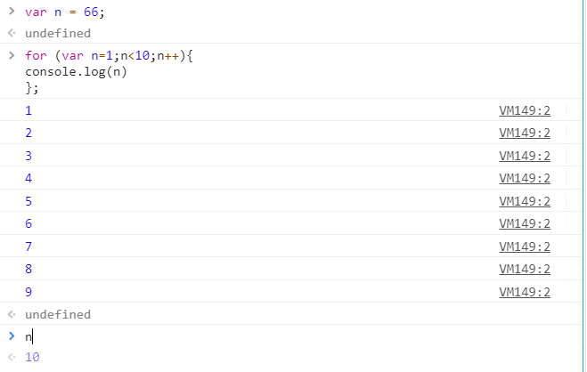
③、声明变量方法：let 变量名
- ES6新增了let命令，用于声明变量，其用法与var类似，但是声明的变量只在let命令所在的代码块内有效，例如：for循环的计数器就很适合使用let命令，里面声明的i变量在自增变化，用let声明就不会影响for循环外的其他i变量。
- 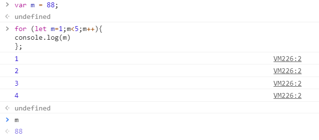
-
for (let i=0;i<10;i++){......}
④、ES6新增了const用来声明常量，一旦声明，其值就不会改变。
-
const PI = 3.1415; PI // 3.1415 如果修改的声明的常量则会报错： PI = 3 // TypeError: "PI" is read-only
JavaScript拥有动态类型（也就是说数据类型随着声明的变量赋值类型而改变变量数据类型）
-
var x; // 此时x是undefined var x = 1; // 此时x是数字 var x = "Alex" // 此时x是字符串
①、数值（Number）
JavaScript不区分整型和浮点型，只有一种数字类型。
-
var a = 12.34; var b = 20; var c = 5e3; // 5000 var d = 5e-3 // 0.005还有一种类型：NaN（表示不是一个数字Not a Number）
-
parseInt('123'); //结果为 123 parseInt('helo') // 结果为NaN，NaN代表非数字值的特殊值，该属性用于指示某个值不是数字。 parseFloat(''123.456') //结果为123.456
②、字符串（String）：
-
var a = 'hello'; var b = 'world'; var c = a+b ; //JavaScript支持字符串直接用+号拼接 console.log(c); //结果为helloworld - 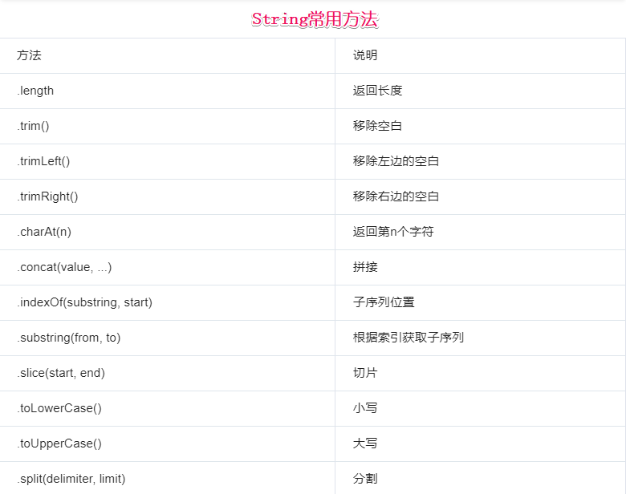
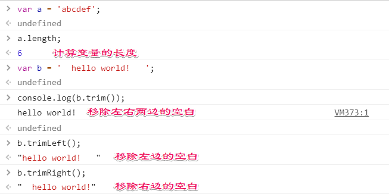
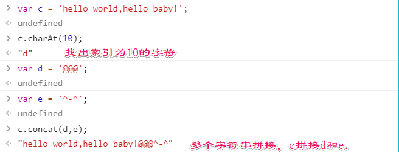
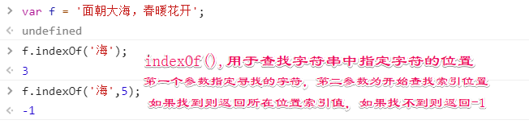
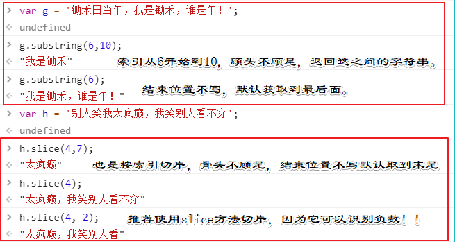
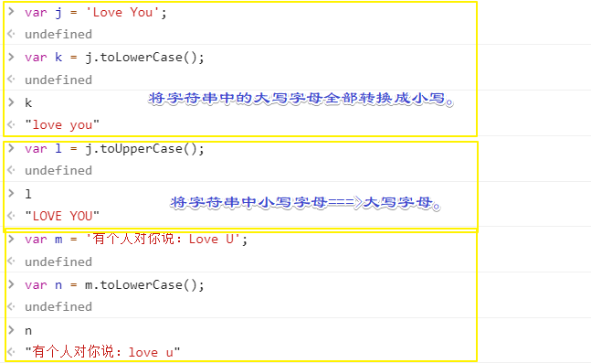
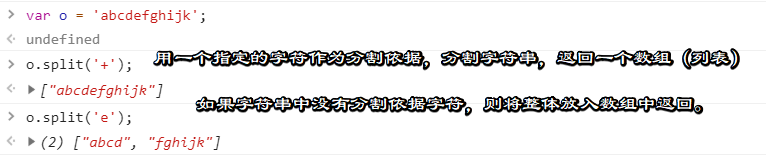
字符串分割方法：slice(start,end)与substring(start,end)的区别：
相同点：
1、如果start=end，则返回空字符串
2、如果end参数不写，省略，则取到字符串末尾。
3、如果某个参数超过字符串的长度，则这个参数会被替换为string的长度。
不同点：
substring()特点：
1、如果start > end ,则start和end会被交换
2、如果参数是复数或者不为数字，则会将其替换为0
slice()特点：
1、如果start > end ,不会交换
2、如果start = -2，则切割从字符串末尾往前数第2个字符开始(包括该位置的字符)
3、如果stop = -3，则切割在从字符串末尾往前数的第3个字符结束(不包括该位置字符) - 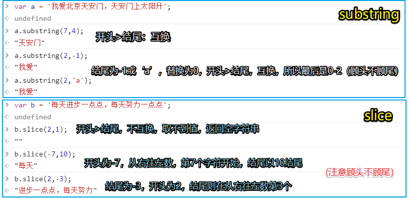
- ES6引入了 模板字符串：（template string）
- 模板字符串是增强版字符串，用反引号标识（esc按键下面那个键），作用：
- 当做普通字符串
- 定义多行字符串
- 字符串中可以嵌入变量（类似格式化输出）
- 模板字符串是增强版字符串，用反引号标识（esc按键下面那个键），作用：
-
//当做普通字符串使用： `啦啦啦啦啦啦` //当做多行字符串使用： ` 轻轻地我走了， 正如我轻轻地来... ` //可以嵌入变量，类似那种格式化输出的形式： var name = 'sgt',age = '18'; ' Hello, ${name}, are you ${age} years old? '
注意：如果在字符串内使用反引号，则需要用转义字符（反斜杠）转义一下。③、布尔值（Boolean）：
true和false都是小写，这点需要注意！ -
var a = true; var b = false; Tips:空字符串（""）、0、null、undefined、NaN都是false - null与undefined的区别：
---- null :表示值为空，一般在需要指定或者清空一个变量时候才会使用，如name = null;
---- undefined: 表示当声明一个变量但未初始化时候，该变量的默认值是undefined，还有就是函数无明确的返回值时候，返回的也是undefined。
！！！：null其实就是表示让一个以前有值的变量变为空，而undefined建名思义，没有被定义，仅仅是声明了变量，然后就没了，具体理解可以联想下图： -
④、对象（Object）：
JavaScript中的所有事物都是对象，字符串、数值、数组、函数...此外，JavaScript允许自定义对象
JavaScript提供多个内建对象，比如：String、Date、Array等等
- 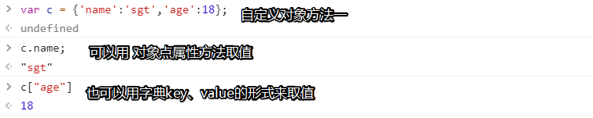
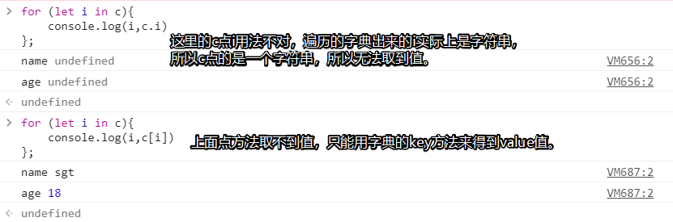
- 第一种创建自定义对象方式：
- 第二种创建自定义对象方式：
- 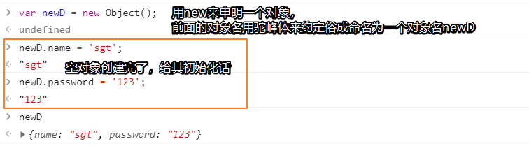
4-1、数组（等同于Python中的列表list）
-
var a = [123, "ABC"]; console.log(a[1]); // 输出"ABC"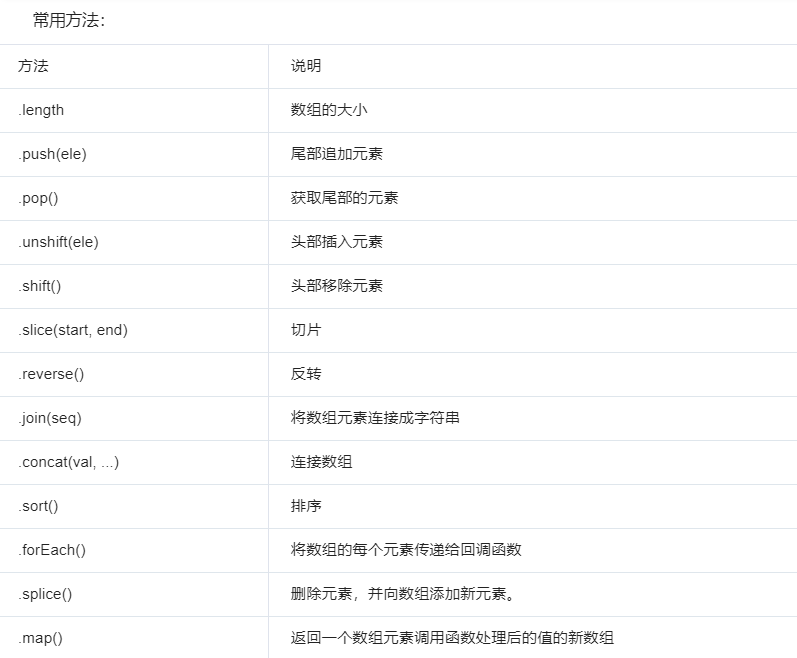
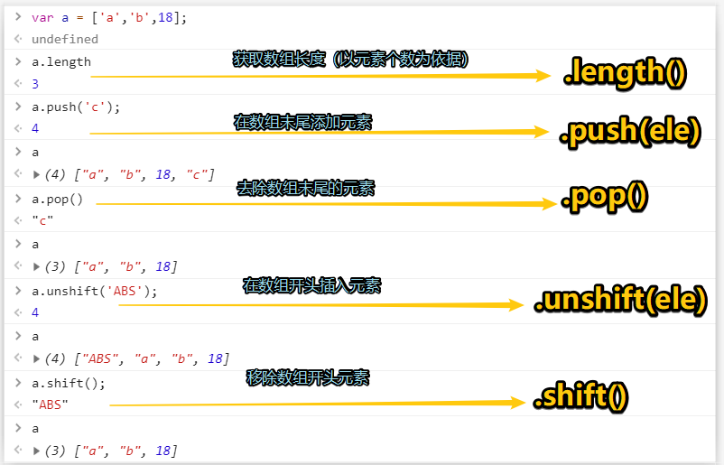
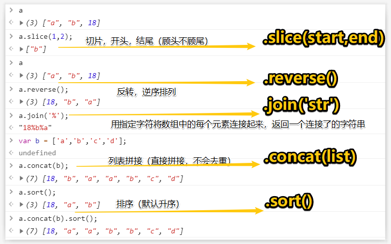
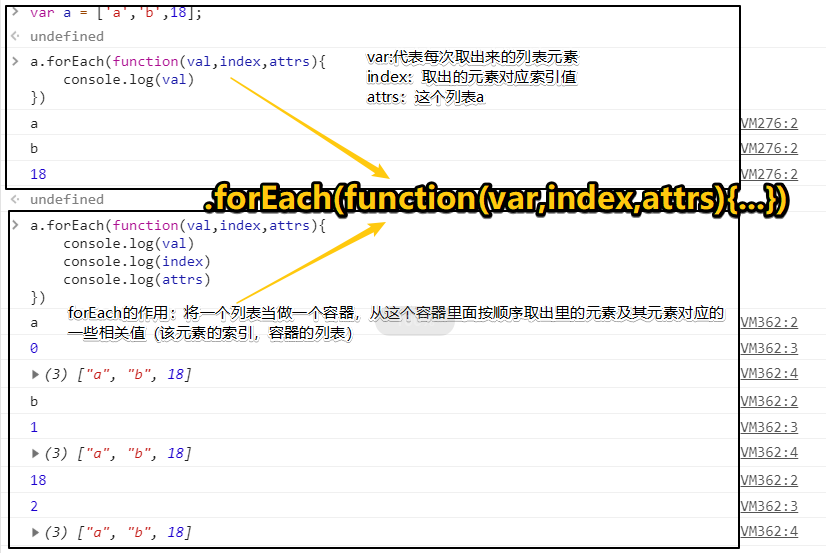
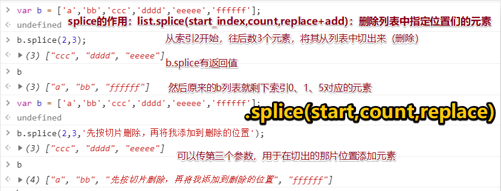
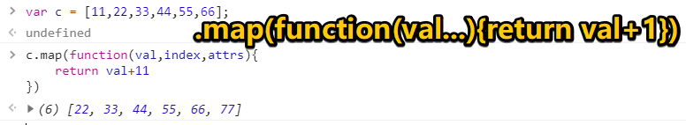
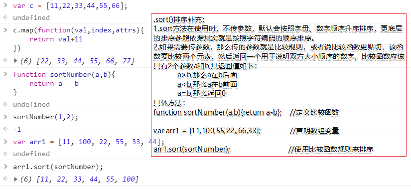
⑤、原始数据类型（symbol）
-
ES6新引入的一种数据类型，表示一个独一无二的值，其作用相当于判断数据的数据类型。
-
数据类型查询：
typeof ‘ABC’； // 'string' typeof null； // 'object' typeof true; // 'boolean' typeof 123 //'number'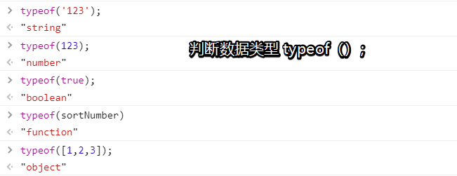
①：比较运算符：
-
> >= < <= != == === !==
大于 大于等于 小于 小于等于 不等于 弱等于 强等于 强不等于注意：
-
1 == “1” // true 弱等于 1 === "1" // false 强等于 /*上面这张情况出现的原因在于JS是一门弱类型语言(会自动转换数据类型)，所以当你用两个等号进行比较时，JS内部会自动先将数
值类型的1转换成字符串类型的1再进行比较，所以我们以后写JS涉及到比较时尽量用三等号来强制限制类型，防止判断错误、 */②：逻辑运算符：
-
&& || ！
与 或 非
and or not③：赋值运算符：
-
= += -= *= /=④：算数运算符：
-
+ - * / % ++ --需要注意的：
var x = 10; var res1 = x++; var res2 = ++x; res1; >10 res2; >12 解析： res1=x++是先将x赋值给res1，然后x++自增长1 res2=++x,上面x自增长了1，所以是11，然后++x是先自增长1变成12，再将其赋值给res2，所以res2为12
#1: if>>else
- 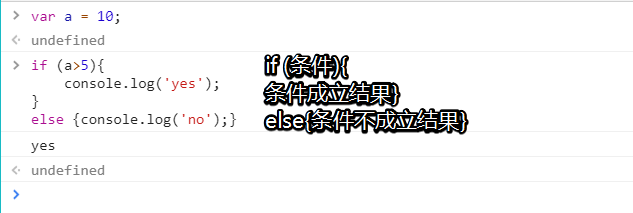
#2: if >>else if >>else
- 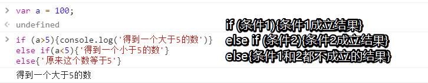
#3: switch
- 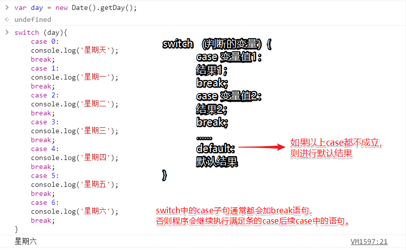
#4: for
- 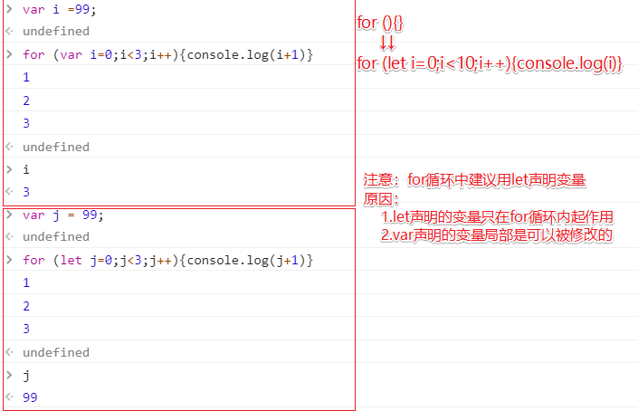
#5: while
- 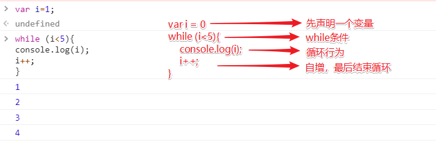
#6: 三元运算
- 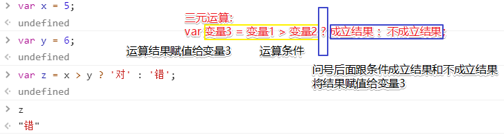
JavaScript中的函数定义方式：
- 几种常见的函数形式：
// 普通函数定义： function f1(){ console.log('hw'); } // 带参数的函数: function f2(a,b){ console.log(arguments); // 内置的arguments对象 console.log(arguments.length); console.log(a, b); } // 带返回值的函数： function sum(a,b){ return a+b; } sum(1.2); //调用函数 // 匿名函数方式： var sum = function(a,b){ return a+b; } - 特殊函数形式：
// ES6中允许使用“箭头”（=>）定义函数。 var f = v => v; // 等同于 var f = function(v){ return v; } // 如果箭头函数不需要参数或需要多个参数，就是用圆括号代表参数部分： var f = () => 5; // 等同于 var f = function(){return 5}; var sum = (num1, num2) => num1 + num2; // 等同于 var sum = function(num1, num2){ return num1 + num2; //这里的return只能返回一个值，如果想返回多个值需要自己手动给他们包一个数组或对象中 } - 函数的全局变量和局部变量
- 局部变量：在JavaScript的函数内部声明的变量（使用var）是局部变量，所以只能在函数内部访问它，只要函数运行完毕，本地变量就会被删除。
- 全局变量：在函数外面声明的变量就是全局变量，网页上的所有脚本和函数都能访问和使用它。
- 变量生成的周期：
- JavaScript的变量的生命期是从他们被声明的时候开始的。
- 局部变量会在函数运行以后删除。
- 全局变量会在页面关闭后删除。
- 作用域：在函数内部查找变量，找不到则到外层全局作用域去找，逐步找到最外层。（下面通过几个例子来了解JavaScript的全局变量和局部变量的含义）
-
1. var city = 'BJ'; function f(){ var city = 'SH'; function inner(){ var city = 'SZ'; console.log(city); } inner(); } f(); //结果为SZ // 分析：f()>inner()>声明了city=‘sz’,然后打印city，inner函数内就有city，所以无需从其他地方查找，打印结果为SZ。 2. var city1 = 'Wuhan'; function Bar(){ console.log(city1); } function f(){ var city1 = 'Erdos'; return Bar; } var ret = f(); ret(); //结果为Wuhan // 分析：ret()>f()()>bar()>bar内没有city1,只能从bar外找，bar外面有city1=‘WuHan’，所以打印结果为WuHan。 3. var city2 = 'BeiJing'; function f(){ var city2 = 'ShangHai'; function inner(){ console.log(city2); } return inner; } var ret = f(); ret(); //结果为：ShangHai // 分析：ret()>f()()>inner()>inner内无city2，从inner开始往外找，inner外是f函数，f函数内部有city='ShangHai'，所以打印结果为ShangHai
6、JavaScript词法分析（了解知识点）
-
 词法分析
词法分析avaScript中在调用函数的那一瞬间，会先进行词法分析。 词法分析的过程： 当函数调用的前一瞬间，会先形成一个激活对象：Avtive Object（AO），并会分析以下3个方面： 1:函数参数，如果有，则将此参数赋值给AO，且值为undefined。如果没有，则不做任何操作。 2:函数局部变量，如果AO上有同名的值，则不做任何操作。如果没有，则将此变量赋值给AO，并且值为undefined。 3:函数声明，如果AO上有，则会将AO上的对象覆盖。如果没有，则不做任何操作。 函数内部无论是使用参数还是使用局部变量都到AO上找。 看两个例子： 第一题： var age = 18; function foo(){ console.log(age); var age = 22; console.log(age); } foo(); // 问：执行foo()之后的结果是？（22） 第二题： var age = 18; function foo(){ console.log(age); var age = 22; console.log(age); function age(){ console.log("呵呵"); } console.log(age); } foo(); // 执行后的结果是？（22） -
答案解析
词法分析过程： 1、分析参数，有一个参数，形成一个 AO.age=undefine; 2、分析变量声明，有一个 var age, 发现 AO 上面已经有一个 AO.age，因此不做任何处理 3、分析函数声明，有一个 function age(){...} 声明， 则把原有的 age 覆盖成 AO.age=function(){...}; 最终，AO上的属性只有一个age，并且值为一个函数声明 执行过程： 注意：执行过程中所有的值都是从AO对象上去寻找 1、执行第一个 console.log(age) 时，此时的 AO.age 是一个函数，所以第一个输出的一个函数 2、这句 var age=22; 是对 AO.age 的属性赋值， 此时AO.age=22 ，所以在第二个输出的是 2 3、同理第三个输出的还是22, 因为中间再没有改变age值的语句了

在JavaScript中，所有的事物都是对象：字符串、数字、数字、日期...等等。在JavaScript中对象是拥有属性和方法的数据。
- 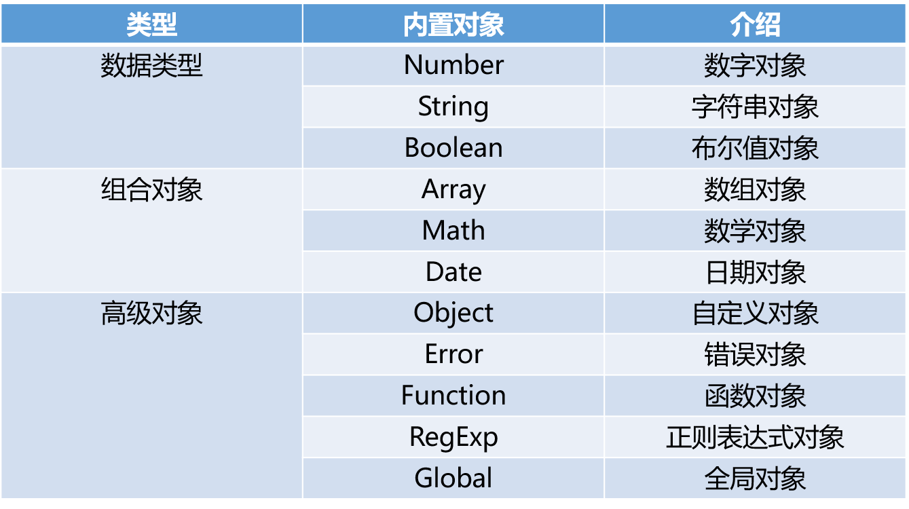
# 自定义对象：JavaScript中的对象本质上是键值对的集合（Hash结构），但是只能用字符串作为key.
-
var a = {'name':'sgt', 'age':16}; console.log(a.name); console.log(a['age']); //结果： //sgt //16 //遍历对象中的内容： var a = {"name": "sgt", "age": 16}; for (var i in a){ console.log(i, a[i]); } //结果： //name sgt //age 16 - 创建对象：
var teacher = new object(); // 创建一个teacher对象 teacher.name = 'sgt'; // 添加teacher对象的name属性 teacher.age = 18; // 添加teacher对象的age属性 - 拓展：
Map数据结构
注意： ES6中提供了Map数据结构。它类似于对象，也是键值对的集合，但是“键”的范围不限于字符串，各种类型的值（包括对象）都可以当做键。 也就是说，Object结构提供了“字符串--值”的对应，Map结构提供了“值--值”的对应，是一种更完善的Hash结构实现。 var m = new Map(); var o = {p: "Hello World"} m.set(o, "content"} m.get(o) // "content" m.has(o) // true m.delete(o) // true m.has(o) // false
JavaScript面向对象之继承// 父类构造函数 var Car = function (loc) { this.loc = loc; }; // 父类方法 Car.prototype.move = function () { this.loc ++; }; // 子类构造函数 var Van = function (loc) { Car.call(this, loc); }; // 继承父类的方法 Van.prototype = Object.create(Car.prototype); // 修复 constructor Van.prototype.constructor = Van; // 扩展方法 Van.prototype.grab = function () { /* ... */ }; - Date对象：
//创建Date对象： //方法1：不指定参数： var d1 = new Date(); console.log(d1.toLocaleString()); //2019/6/1 下午3:11:18 //方法2：参数为日期字符串： var d2 = new Date('2004/3/20 11:12'); console.log(d2.toLocaleString()); //2004/3/20 上午11:12:00 //方法3：参数为毫秒数： var d3 = new Date(5000); console.log(d3.toLocaleString()); console.log(d3.toUTCString()); //1970/1/1 上午8:00:05 //Thu, 01 Jan 1970 00:00:05 GMT //方法4：参数为年月日小时分钟秒毫秒： var d4 = new Date(2004,2,20,11,12,0,300); console.log(d4.toLocaleString()); //2004/3/20 上午11:12:00 //毫秒并不直接显示 - Date对象的方法：
var d = new Date(); d.getDate(); //获取当前日（今天多少号） d.getDay(); //获取星期(比如从星期天到星期六依次是0-6) d.getMonth(); //获取月份数（0-11,0是一月，11是12月，依次类推） d.getFullYear(); //获取完整的年份2019 d.getYear(); //获取年119 d.getHours(); //获取小时15 d.getMinutes(); //获取分钟22 d.getSeconds(); //获取秒53 d.getMilliseconds(); //获取毫秒513 d.getTime(); //返回累计毫秒数（从1970/1/1午夜）1559373773513 - 应用：将当前日期按照‘2019-12-27 11:11 星期三’格式输出
格式化输出日期时间
const WEEKMAP = { 0:'星期天', 1:'星期一', 2:'星期二', 3:'星期三', 4:'星期四', 5:'星期五', 6:'星期六'}; function showTime() { var y1 = d.getFullYear(); var m1 = d.getMonth()+1; var d1 = d.getDate(); var h1 = d.getHours(); var mm1 = d.getMinutes() < 10 ? '0'+d.getMinutes():d.getMinutes(); var w1 = WEEKMAP[d.getDay()]; my_time = `${y1}-${m1}-${d1} ${h1}:${mm1} ${w1}`; console.log(my_time) }; showTime(); 2019-6-1 15:41 星期六 -
JSON对象：
- 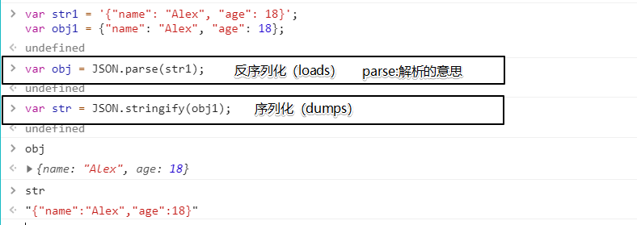
-
RegExp对象(正则对象）:
// 定义正则表达式两种方式 var reg1 = new RegExp("^[a-zA-Z][a-zA-Z0-9]{5,11}"); var reg2 = /^[a-zA-Z][a-zA-Z0-9]{5,9}$/; // 正则校验数据 reg1.test('jason666') reg2.test('jason666') /*第一个注意事项，正则表达式中不能有空格*/ // 全局匹配 var s1 = 'egondsb dsb dsb'; s1.match(/s/) s1.match(/s/g) var reg2 = /^[a-zA-Z][a-zA-Z0-9]{5,9}$/g reg2.test('egondsb'); reg2.test('egondsb'); reg2.lastIndex; /*第二个注意事项，全局匹配时有一个lastIndex属性*/ // 校验时不传参数 var reg2 = /^[a-zA-Z][a-zA-Z0-9]{5,9}$/ reg2.test(); reg2.test(undefined); var reg3 = /undefined/; reg3.test(); -
Math对象（拓展知识）
abs(x) 返回数的绝对值。 exp(x) 返回 e 的指数。 floor(x) 对数进行下舍入。 log(x) 返回数的自然对数（底为e）。 max(x,y) 返回 x 和 y 中的最高值。 min(x,y) 返回 x 和 y 中的最低值。 pow(x,y) 返回 x 的 y 次幂。 random() 返回 0 ~ 1 之间的随机数。 round(x) 把数四舍五入为最接近的整数。 sin(x) 返回数的正弦。 sqrt(x) 返回数的平方根。 tan(x) 返回角的正切。